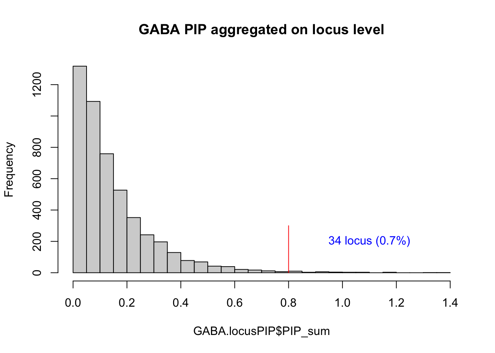

caQTL_cTWAS
Lifan Liang
2023-12-08
Last updated: 2024-01-05
Checks: 7 0
Knit directory: neuron_stim_eQTL100/
This reproducible R Markdown analysis was created with workflowr (version 1.7.0). The Checks tab describes the reproducibility checks that were applied when the results were created. The Past versions tab lists the development history.
Great! Since the R Markdown file has been committed to the Git repository, you know the exact version of the code that produced these results.
Great job! The global environment was empty. Objects defined in the global environment can affect the analysis in your R Markdown file in unknown ways. For reproduciblity it’s best to always run the code in an empty environment.
The command set.seed(20231109) was run prior to running
the code in the R Markdown file. Setting a seed ensures that any results
that rely on randomness, e.g. subsampling or permutations, are
reproducible.
Great job! Recording the operating system, R version, and package versions is critical for reproducibility.
Nice! There were no cached chunks for this analysis, so you can be confident that you successfully produced the results during this run.
Great job! Using relative paths to the files within your workflowr project makes it easier to run your code on other machines.
Great! You are using Git for version control. Tracking code development and connecting the code version to the results is critical for reproducibility.
The results in this page were generated with repository version 5bbe54f. See the Past versions tab to see a history of the changes made to the R Markdown and HTML files.
Note that you need to be careful to ensure that all relevant files for
the analysis have been committed to Git prior to generating the results
(you can use wflow_publish or
wflow_git_commit). workflowr only checks the R Markdown
file, but you know if there are other scripts or data files that it
depends on. Below is the status of the Git repository when the results
were generated:
Ignored files:
Ignored: .DS_Store
Ignored: .Rhistory
Ignored: data/.DS_Store
Ignored: data/single_group_ctwas/.DS_Store
Note that any generated files, e.g. HTML, png, CSS, etc., are not included in this status report because it is ok for generated content to have uncommitted changes.
These are the previous versions of the repository in which changes were
made to the R Markdown (analysis/caQTL_cTWAS.Rmd) and HTML
(docs/caQTL_cTWAS.html) files. If you’ve configured a
remote Git repository (see ?wflow_git_remote), click on the
hyperlinks in the table below to view the files as they were in that
past version.
| File | Version | Author | Date | Message |
|---|---|---|---|---|
| Rmd | 5bbe54f | Lifan Liang | 2024-01-05 | wflow_publish(c("analysis", "data", "docs")) |
| html | d053828 | Lifan Liang | 2023-12-20 | Build site. |
| Rmd | e2bc65f | Lifan Liang | 2023-12-20 | wflow_publish(c("analysis", "data")) |
| html | 1f52999 | Lifan Liang | 2023-12-08 | Build site. |
| Rmd | feb1783 | Lifan Liang | 2023-12-08 | wflow_publish(c("analysis", "data")) |
Peak selection
cPeaks was defined as FDR < 0.05. The inclusion of peaks for each condition (a unique combination of time points and cell types) is: (1) a caPeak in any time point in the same cell type; (2) nominal P value < 0.1 in the current condition. The number of peaks was shown in the table below
| 0hour | 1hour | 6hour | |
|---|---|---|---|
| GABA | 11580 | 12059 | 12110 |
| nmglut | 6322 | 6593 | 6603 |
| npglut | 13107 | 13633 | 13632 |
cTWAS parameter estimation
For each peak selected, the lead caQTL was used to build the prediction model. cTWAS first performed parameter estimation without fine mapping.
GABA parameters
| Version | Author | Date |
|---|---|---|
| 1f52999 | Lifan Liang | 2023-12-08 |
library(RColorBrewer)
myPalette <- brewer.pal(4, "Set2")
pie(GABA.params$group_pve, col=myPalette, border="white",
main = paste0(sprintf("%.2f", 100-(GABA.params$group_pve[1]/GABA.params$total_pve)*100), "% PVE for GABA peaks"))


Significant peaks
A peak is significant for the cell type if its sum of PIP across time points is more than 0.8. There are 22 peaks in GABA, 6 peaks in NPglut, and 11 peaks in NMglut.
GABA significant peaks
| PeakRange | PIP_sum | PIP_0hr_GABA | PIP_1hr_GABA | PIP_6hr_GABA | PIP_diff |
|---|---|---|---|---|---|
| chr12_57096240_57096740 | 1.012 | 0.429 | 0.126 | 0.457 | 0.153 |
| chr13_35764141_35764641 | 1.000 | 0.000 | 1.000 | 0.000 | 1.000 |
| chr18_29920961_29921461 | 0.970 | 0.467 | 0.006 | 0.497 | 0.035 |
| chr7_2010548_2011048 | 0.953 | 0.004 | 0.004 | 0.945 | 0.946 |
| chr1_115314324_115314824 | 0.947 | 0.402 | 0.117 | 0.428 | 0.143 |
| chr13_34165196_34165696 | 0.933 | 0.019 | 0.005 | 0.909 | 0.895 |
| chr7_157665058_157665558 | 0.930 | 0.011 | 0.005 | 0.915 | 0.909 |
| chr19_5977436_5977936 | 0.903 | 0.000 | 0.000 | 0.903 | 0.903 |
| chr3_175410533_175411033 | 0.900 | 0.181 | 0.155 | 0.564 | 0.538 |
| chr4_89704715_89705215 | 0.874 | 0.420 | 0.007 | 0.447 | 0.034 |
| chr5_90929346_90929846 | 0.872 | 0.370 | 0.108 | 0.394 | 0.132 |
| chr22_42313863_42314363 | 0.861 | 0.841 | 0.004 | 0.016 | -0.822 |
| chr2_65539480_65539980 | 0.857 | 0.390 | 0.052 | 0.415 | 0.077 |
| chr11_64044962_64045462 | 0.850 | 0.656 | 0.003 | 0.192 | -0.461 |
| chr11_113577991_113578491 | 0.845 | 0.003 | 0.260 | 0.582 | 0.840 |
| chr10_127354900_127355400 | 0.839 | 0.356 | 0.104 | 0.379 | 0.126 |
| chr2_50516287_50516787 | 0.835 | 0.052 | 0.005 | 0.778 | 0.732 |
| chr5_89432966_89433466 | 0.828 | 0.004 | 0.002 | 0.823 | 0.820 |
| chr11_41035329_41035829 | 0.822 | 0.495 | 0.144 | 0.184 | -0.167 |
| chr2_232927961_232928461 | 0.820 | 0.384 | 0.112 | 0.325 | 0.053 |
| chr1_27099450_27099950 | 0.812 | 0.063 | 0.011 | 0.738 | 0.686 |
| chr1_204619684_204620184 | 0.807 | 0.716 | 0.025 | 0.066 | -0.625 |
npglut significant peaks
| PeakRange | PIP_sum | PIP_0hr_npglut | PIP_1hr_npglut | PIP_6hr_npglut | PIP_diff |
|---|---|---|---|---|---|
| chr12_57096240_57096740 | 0.985 | 0.134 | 0.851 | 0.000 | 0.718 |
| chr2_172098931_172099431 | 0.920 | 0.004 | 0.904 | 0.012 | 0.912 |
| chr4_76234290_76234790 | 0.907 | 0.122 | 0.781 | 0.005 | 0.663 |
| chr18_29920961_29921461 | 0.900 | 0.007 | 0.893 | 0.000 | 0.886 |
| chr10_86244301_86244801 | 0.852 | 0.106 | 0.672 | 0.073 | 0.640 |
| chr11_64044962_64045462 | 0.835 | 0.000 | 0.785 | 0.050 | 0.835 |
nmglut significant peaks
| PeakRange | PIP_sum | PIP_0hr_nmglut | PIP_1hr_nmglut | PIP_6hr_nmglut | PIP_diff |
|---|---|---|---|---|---|
| chr6_92378607_92379107 | 0.987 | 0.012 | 0.000 | 0.975 | 0.963 |
| chr7_1986364_1986864 | 0.979 | 0.007 | 0.006 | 0.966 | 0.965 |
| chr22_41362794_41363294 | 0.970 | 0.969 | 0.000 | 0.001 | -0.967 |
| chr2_172098931_172099431 | 0.941 | 0.006 | 0.237 | 0.699 | 0.929 |
| chr7_2008327_2008827 | 0.912 | 0.877 | 0.021 | 0.015 | -0.841 |
| chr2_180125539_180126039 | 0.899 | 0.298 | 0.000 | 0.602 | 0.304 |
| chr11_113577991_113578491 | 0.874 | 0.203 | 0.197 | 0.474 | 0.468 |
| chr6_33592819_33593319 | 0.852 | 0.002 | 0.494 | 0.356 | 0.848 |
| chr12_2191122_2191622 | 0.838 | 0.002 | 0.034 | 0.803 | 0.835 |
| chr5_135670508_135671008 | 0.822 | 0.248 | 0.000 | 0.574 | 0.326 |
| chr5_90929346_90929846 | 0.816 | 0.224 | 0.176 | 0.416 | 0.368 |
Cell type overlap

Dynamic cPeaks
In addition to PIP sum > 0.8, dynamic cpeaks must satisfy that:
\[ PIP_{GABA6} + PIP_{GABA1} - PIP_{GABA0} \geq 0.5 \] for the GABA cell type. The same condition applies to the other cell types .
Peaks not included in one time point are regarded as \(PIP=0\).

| Version | Author | Date |
|---|---|---|
| d053828 | Lifan Liang | 2023-12-20 |
Cell type correlation
Comparing top genes across cell types nominated in the same locus
This table shows how different cell types may nominate different genes in the same locus.
All shared peaks are consistent except locus 3&4 in chr7.
| locus_tag | GABA | npglut | nmglut |
|---|---|---|---|
| 1_19 | chr1_27099450_27099950 | ||
| 1_71 | chr1_115314324_115314824 | ||
| 1_103 | chr1_204619684_204620184 | ||
| 2_32 | chr2_50516287_50516787 | ||
| 2_42 | chr2_65539480_65539980 | ||
| 2_137 | chr2_232927961_232928461 | ||
| 3_108 | chr3_175410533_175411033 | ||
| 4_61 | chr4_89704715_89705215 | ||
| 5_52 | chr5_89432966_89433466 | ||
| 5_53 | chr5_90929346_90929846 | chr5_90929346_90929846 | |
| 7_3 | chr7_2010548_2011048 | chr7_1986364_1986864,chr7_2008327_2008827 | |
| 7_4 | chr7_2010548_2011048 | chr7_2008327_2008827 | |
| 7_98 | chr7_157665058_157665558 | ||
| 10_80 | chr10_127354900_127355400 | ||
| 11_26 | chr11_41035329_41035829 | ||
| 11_36 | chr11_64044962_64045462 | chr11_64044962_64045462 | |
| 11_67 | chr11_113577991_113578491 | chr11_113577991_113578491 | |
| 12_35 | chr12_57096240_57096740 | chr12_57096240_57096740 | |
| 13_11 | chr13_34165196_34165696 | ||
| 13_13 | chr13_35764141_35764641 | ||
| 18_16 | chr18_29920961_29921461 | chr18_29920961_29921461 | |
| 19_6 | chr19_5977436_5977936 | ||
| 22_18 | chr22_42313863_42314363 | ||
| 2_104 | chr2_172098931_172099431 | chr2_172098931_172099431 | |
| 4_52 | chr4_76234290_76234790 | ||
| 10_55 | chr10_86244301_86244801 | ||
| 2_108 | chr2_180125539_180126039 | ||
| 5_81 | chr5_135670508_135671008 | ||
| 6_28 | chr6_33592819_33593319 | ||
| 6_62 | chr6_92378607_92379107 | ||
| 12_2 | chr12_2191122_2191622 | ||
| 22_17 | chr22_41362794_41363294 |
Weak signal aggregation
Locus level

Rerunning cTWAS merging caQTL with the same SNP
For each SNP, we only selected one cPeak related to it with FDR<0.05.
GABA parameters
GABA has more cPeaks than those run with multiple cPeaks. But only 6 hours has more.
library(RColorBrewer)
myPalette <- brewer.pal(4, "Set2")
pie(GABA.params$group_pve, col=myPalette, border="white",
main = paste0(sprintf("%.2f", 100-(GABA.params$group_pve[1]/GABA.params$total_pve)*100), "% PVE for GABA OCR clusters"))
sessionInfo()R version 4.1.2 (2021-11-01)
Platform: x86_64-apple-darwin17.0 (64-bit)
Running under: macOS Big Sur 10.16
Matrix products: default
BLAS: /Library/Frameworks/R.framework/Versions/4.1/Resources/lib/libRblas.0.dylib
LAPACK: /Library/Frameworks/R.framework/Versions/4.1/Resources/lib/libRlapack.dylib
locale:
[1] en_US.UTF-8/en_US.UTF-8/en_US.UTF-8/C/en_US.UTF-8/en_US.UTF-8
attached base packages:
[1] grid stats graphics grDevices utils datasets methods
[8] base
other attached packages:
[1] ggvenn_0.1.10 ggplot2_3.3.5 dplyr_1.0.7 kableExtra_1.3.4
[5] RColorBrewer_1.1-2 workflowr_1.7.0
loaded via a namespace (and not attached):
[1] tidyselect_1.1.1 xfun_0.29 bslib_0.3.1 purrr_0.3.4
[5] colorspace_2.0-2 vctrs_0.3.8 generics_0.1.2 viridisLite_0.4.0
[9] htmltools_0.5.2 yaml_2.2.2 utf8_1.2.2 rlang_1.0.0
[13] jquerylib_0.1.4 later_1.3.0 pillar_1.7.0 withr_2.4.3
[17] glue_1.6.1 DBI_1.1.2 lifecycle_1.0.1 stringr_1.4.0
[21] munsell_0.5.0 gtable_0.3.0 rvest_1.0.2 evaluate_0.14
[25] labeling_0.4.2 knitr_1.37 callr_3.7.0 fastmap_1.1.0
[29] httpuv_1.6.5 ps_1.6.0 fansi_1.0.2 highr_0.9
[33] Rcpp_1.0.11 promises_1.2.0.1 scales_1.1.1 webshot_0.5.5
[37] jsonlite_1.7.3 farver_2.1.0 systemfonts_1.0.4 fs_1.5.2
[41] digest_0.6.29 stringi_1.7.6 processx_3.5.2 getPass_0.2-2
[45] cowplot_1.1.1 rprojroot_2.0.2 cli_3.1.1 tools_4.1.2
[49] magrittr_2.0.2 sass_0.4.1 tibble_3.1.6 crayon_1.4.2
[53] whisker_0.4 pkgconfig_2.0.3 ellipsis_0.3.2 xml2_1.3.3
[57] svglite_2.1.0 assertthat_0.2.1 rmarkdown_2.11 httr_1.4.2
[61] rstudioapi_0.13 R6_2.5.1 git2r_0.29.0 compiler_4.1.2